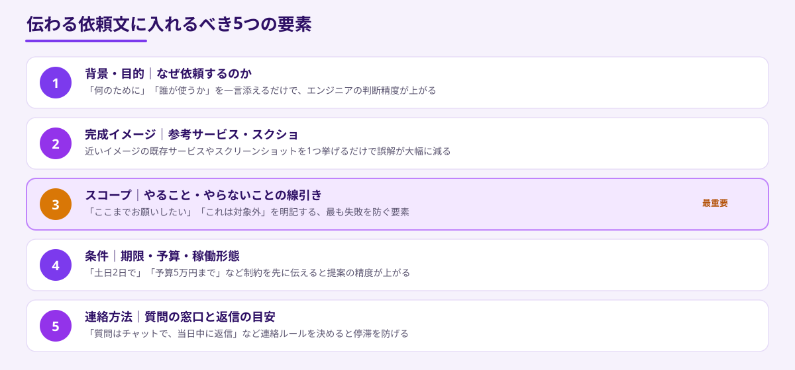
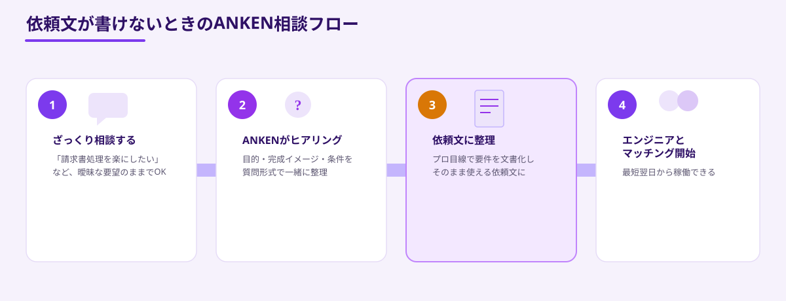

「エンジニアに依頼したいことはあるけれど、何をどう伝えればいいかわからない」——スポット外注を検討する発注者の多くが、最初にこの壁にぶつかります。実は、外注がうまくいくかどうかの大部分は、最初に渡す「依頼文」の質で決まります。
同じ要望でも、依頼文の書き方ひとつで、エンジニアから返ってくる提案の精度も、完成するものの満足度も大きく変わります。逆に言えば、依頼文を整えるだけで、外注の失敗リスクを大幅に下げることができます。
この記事では、伝わらない依頼文に共通する特徴、伝わる依頼文に入れるべき要素、そしてそのまま使えるテンプレートまで、具体的に解説します。
なぜ「依頼文」だけで外注の成否が決まるのか
スポット外注では、発注者とエンジニアが事前に顔を合わせず、短いやり取りだけでプロジェクトが始まることが少なくありません。そのため、最初の依頼文が唯一の「共通認識のすり合わせ材料」になります。ここで意図がずれると、後から修正するコストは、依頼文を整える手間よりもずっと大きくなります。
実際、ANKENに寄せられる相談の中でも、「思っていたものと違うものが出てきた」というトラブルの多くは、エンジニアのスキル不足ではなく、依頼文の段階で前提がすり合っていなかったことが原因です。逆に、依頼文がしっかり書けている案件は、初回の提案からズレが少なく、スムーズに進む傾向があります。
- 事前の対面打ち合わせがない分、依頼文が唯一の意図伝達手段になる
- 依頼文が曖昧だと、エンジニアは「推測」で提案を作るしかなくなる
- 後からの方向転換は、最初の確認より何倍もコストがかかる
つまり、依頼文を整えることは、外注先選びと同じくらい重要な準備作業だと言えます。
伝わらない依頼文に共通する3つの特徴
実際に「うまく伝わらない依頼文」には、いくつかの共通したパターンがあります。
1つ目は、「いい感じにしてほしい」という抽象的な表現に終始していることです。「使いやすく」「モダンな感じで」といった言葉だけでは、エンジニアによって解釈が大きく分かれてしまいます。
2つ目は、「やること」と「やらないこと」の境界が書かれていないことです。範囲が決まっていないと、エンジニアは安全側に倒して見積もりを大きくするか、逆に必要な作業を見落としてしまうリスクがあります。
3つ目は、条件面（期限・予算・稼働形態）が後出しになっていることです。提案をもらった後に「実は今週末までにお願いしたい」と条件が変わると、せっかくの提案がそもそも前提から崩れてしまいます。
- 抽象的な表現（「いい感じに」「使いやすく」）に終始している
- やること・やらないことの境界（スコープ）が書かれていない
- 期限・予算・稼働形態などの条件が後出しになっている
失敗しない依頼文に入れるべき5つの要素
では、伝わる依頼文には何を書けばよいのでしょうか。ANKENで多くのマッチングを見てきた中で、特に重要な5つの要素を整理しました。

中でも最も重要なのが3つ目の「スコープ」です。「ここまでお願いしたい」「これは対象外」を明確にするだけで、認識のズレによる失敗を大きく減らせます。逆に言えば、他の要素が多少粗くても、スコープだけはっきりしていれば、エンジニアとの対話で残りを補っていくことができます。
5つすべてを完璧に書く必要はありません。まずは「背景・目的」と「スコープ」の2つだけでも明記できれば、依頼文としての完成度は大きく上がります。残りはANKEN側のヒアリングで一緒に整理することもできます。
コピペで使えるスポット外注の依頼文テンプレート
実際に使える依頼文のテンプレートを用意しました。括弧の中を自分の状況に置き換えるだけで、そのまま依頼文として使えます。
- 背景・目的：（例）社内の請求書処理に毎月20時間かかっており、自動化したい
- 完成イメージ：（例）PDFの請求書をアップロードすると、金額と取引先を自動抽出してCSVに出力するイメージ
- スコープ（やること）：（例）PDFのアップロード機能、OCRでの読み取り、CSV出力までを対象とする
- スコープ（やらないこと）：（例）会計システムへの自動連携は今回は対象外とする
- 条件：（例）来週末の土日2日間、予算は5万円程度を想定
- 連絡方法：（例）質問はチャットで、当日中に返信する
このテンプレートを土台にすれば、初めて外注する発注者でも、必要な情報を漏れなく伝えることができます。すべての項目を埋めきれない場合は、わかる範囲だけ記入してANKENに相談いただいても構いません。
依頼文がうまく書けないときの対処法
「テンプレートを見ても、自分の要望をどう言葉にすればいいかわからない」という場合も多くあります。その場合は、最初から完璧な依頼文を目指す必要はありません。

ANKENでは、「請求書処理を楽にしたい」といったざっくりした要望の状態からでも相談を受け付けています。担当者が目的・完成イメージ・条件などを質問形式でヒアリングし、そのまま使える依頼文の形に整理します。整理された依頼文をもとに、適切なスキルを持つエンジニアとのマッチングに進みます。
依頼文に自信がない場合は、「こういう業務で困っている」という1文だけを伝えるところから始めても問題ありません。むしろ無理に作り込んだ依頼文よりも、実際の悩みをそのまま伝えてもらう方が、的確な提案につながることが多くあります。
まとめ・ANKENへのご相談
スポット外注の成否は、エンジニアの腕前だけでなく、依頼文の質によって大きく左右されます。背景・完成イメージ・スコープ・条件・連絡方法という5つの要素、特に「スコープ」を明確にするだけで、認識のズレによる失敗を大幅に減らすことができます。
テンプレートを使っても言葉にならない場合は、無理に1人で抱え込まず、ANKENにそのまま相談してください。ざっくりした要望からでも、ヒアリングを通じて依頼文に整理し、最適なエンジニアとのマッチングまでサポートします。
「うまく言葉にできない」という段階からでも相談を歓迎します。固定費ゼロ・週末スポットから依頼可能です。
👉 無料でスポット依頼を相談する初回相談は無料です。要件が固まっていなくてもOKです。